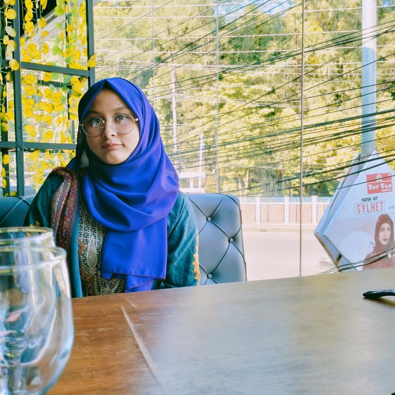

Passionate about learning new technologies and applying them to real-world challenges.
About Me Get In Touch
I am Currently pursuing my B.Sc in Computer Science & Engineering at Metropolitan University, Bangladesh. I've developed a solid academic foundation across OOP, data structures, algorithms and AI fundamentals.
Beyond coursework, I enjoy working with teammates on meaningful builds — and I'm always curious about how the right technology can change everyday experiences for the better.